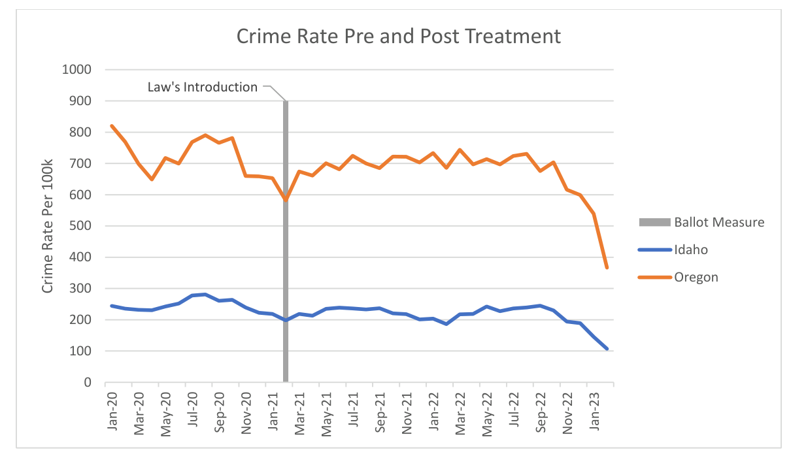

01 · POLICY EVALUATION
Crime Rates & Oregon Ballot Measure 110
This research examines the relationship between Oregon's Measure 110 and subsequent crime-rate outcomes. Using monthly crime data from Oregon and Idaho, I developed a difference-in-differences framework to compare changes following implementation. The analysis incorporates socioeconomic controls and discusses important limitations—including the short pre-treatment period and differences between the treatment and comparison states—that affect how results should be interpreted.
Methods: Econometrics · Difference-in-Differences · Python · Stata · Policy Evaluation